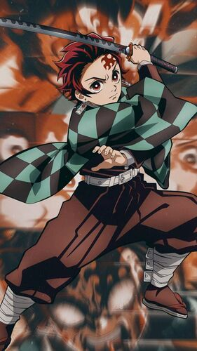
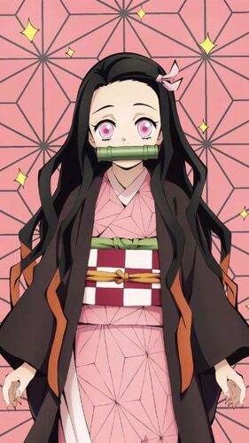
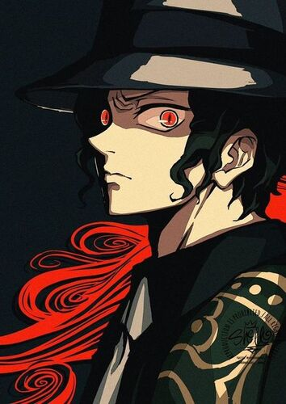
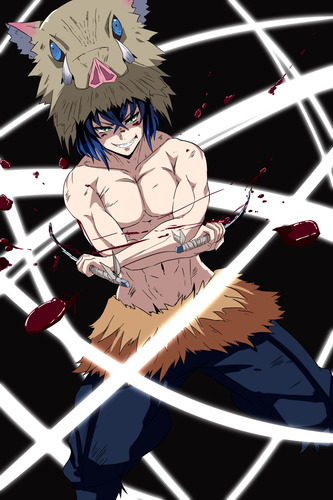
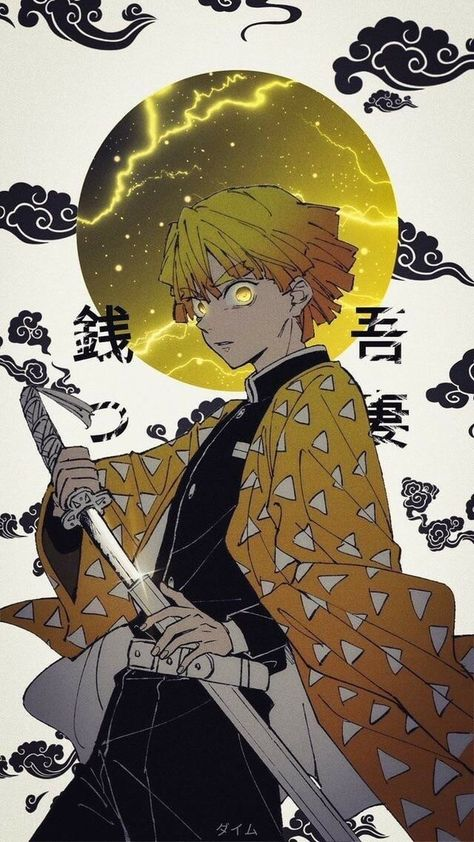

 Tanjiero Kamado Es el protagonista principal de Kimetsu no Yaiba. Es un cazador de Demonios cuyo principal objetivo es encontrar al responsable de haber matado a su familia y convertido a su hermana Nezuko en una Demonio y luego juró derrotar a Muzan Kibutsuji, el Rey de los Demonios, para evitar que otros sufran el mismo destino que él.
 Nezuko Kamado Es la hermana menor de Tanjiro. Ella fue transformada en Demonio por Muzan Kibutsuji acompañando a Tanjiro en su viaje para volver a ser humana. Es una de las protagonistas principales de Kimetsu no Yaiba.
 Muzan Kibutsuji Este demonio vivio durante más de mil años y fue el responsable del origen de los otros demonios. Era capaz de manipular su estructura celular y con frecuencia se disfrazó de diferentes humanos de varias edades y géneros.
 Inosuke Hashibira Inosuke es un joven criado por un jabalí y utiliza un estilo autodidacta llamado Respiración de la Bestia. Al príncipio consideraba a Tanjiro como un enemigo, pero no tardaron en convertirse en buenos amigos. Aunque no sabe escribir reconoce su nombre porque tenía un papel que decía “Inosuke” y aprendió a hablar gracias a un viejo que le daba comida.
 Zenitsu Agatsuma Es un joven cobarde que se vio obligado a unirse al cuerpo de los Demon Slayers aproximadamente al mismo tiempo que Tanjiro y Kanao para así poder pagar todas sus deudas pendientes, Zenitsu utiliza un estilo de combate conocido como La Respiración del Rayo. A pesar de su cobardía cuando este se queda inconsciente o dormido, rápidamente su carácter cambia inesperadamente y se vuelve una persona más seria al momento de matar demonios.